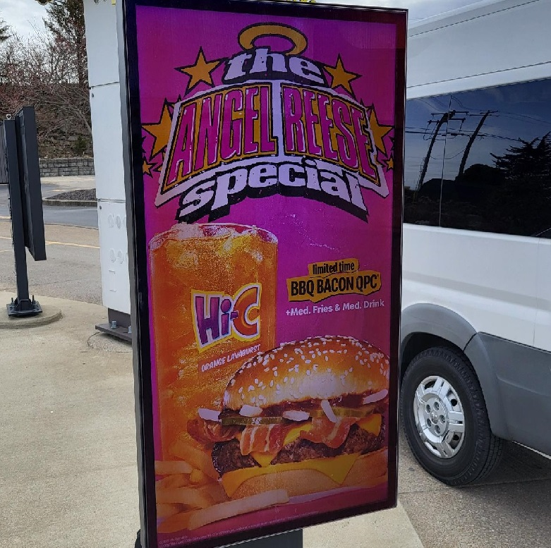
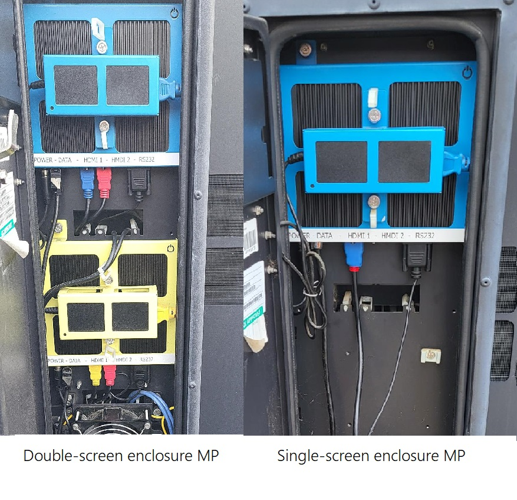

Basics
A basic guide on what parts the enclosures contain

DMB Support team is involved with all of the hardware within a
McDonald's Drive-Thru Digital Menu Boards (later on mentioned
as DMB) enclosures, and indoor DMBs.
Hardware that every DMB screen contains is as follows:
-Enclosure/Enclosure case (for Outdoor drive-thru boards)
-Display (either 49" LG screen indoor, or a 55" AUO/LG or 55"
Samsung outdoor screen)
-Media Player (for each Display, one Media Player is
assigned)
-HDMI Cables (from the Media Player to the Display)
-RS232 Cables (from the Media Player to the Display)
-Network Cables (CAT6 cables from the Media Player to
Switches)
-Power Supply Unit (PSU) & Power cables
Additionally, enclosures can contain different
parts depending on the type of the enclosure (Stratacache or
Coates, which will be explained later on). Coates enclosure
issues which are physical damage issues are handled by Coates,
with an exception for Vermin Barriers. Stratacache enclosures
also contain the following hardware, which can be replaced
after new parts are quoted:
-Fan trays
-Filters
-Door/Enclosure struts
-Vermin barriers
Indoor screens
A basic guide on Indoor Digital Menu Boards (IDMB)
Indoor displays are always 49" LG screens, with various
layouts:
3 Displays (new store layout, one screen is a merchendiser,
two regular screens)
5 Displays (classic layout, 5 screens numbered 1 to 5 from
left to right, all alligned on one wall)
For Indoor media players, 150ft of CAT6 network cable is
needed.
Picture above is the most usual IDMB Layout.
Outdoor screen
A basic guide on Outdoor Digital Menu Boards (ODMB)
Outdoor screens are 55" screens, within a protected enclosure.
Depending of the location of the enclosure, enclosures have
one or two Displays within the enclosure. The numbers for the
Outdoor DMBs start with 11, and go up to 16.
Lane 1
single-screen enclosure = Display 11
Lane 1
double-screen enclosure left screen = Display 12
Lane 1
double-screen enclosure right screen = Display 13
Lane 2
single-screen enclosure = Display 14
Lane 2
double-screen enclosure left screen = Display 15
Lane 2
double-screen enclosure right screen = Display 16
There are three different layouts for the outdoor
screens:
-Two lanes, one single screen (presell) and a
double-screen enclosure (drive-thru), this is the most usual
layout which is to be expected.
-One lane, one single
screen (presell) and a double-screen enclosure (drive-thru),
this is just a store with a single Drive-thru lane.
-One
lane, one single screen (presell) and two double-screen
enclosures, this is called a Tandem layout.
Outdoor
enclosures and screens are either Stratacache or Coates ODMB
enclosures, which are not compatible with eachother,
Stratacache enclosures are either old LG 55" screens, or new
AUO 55" screens, while they go into the same enclosures, LG
and AUO should not be mixed, as it may impact the
functionallity.
If the Display 14 (single-screen in Lane
2) is an LG screen, along with Display 15 (double-screen in
Lane 2, left side), and a Display 16 (double-screen in Lane 2,
right side) has a new AUO screen delivered, it should be
swapped with 14, to keep LG screens in the same enclosure.
Coates enclosures are always Samsung 55" screens, and Out of
Warranty requests for a new screen are done by Coates, with an
exception on if the customer has an NCR Break&Fix contract.
In-warranty replacement is handled by NCR. Both enclosures
have their own different parts and PIDS, according to the
enclosure they belong to.
For an example,
HPWR-601091 - NG-2 MP power supply [Stratacache Power
Supply Unit]
7182-K273-V001 ODMB Media Player PSU
Replacement Kit ODMB 4020150005-00 [Coates Power Supply Unit]
An example of what a single-screen Coates enclosure
looks like:

All of the Displays, both indoor and outdoor, have their own
assigned Media Players.

For outdoor enclosures, 250ft of Cat6 rated cable is needed,
per cable. For every Media Player, two network cable runs are
needed, one on Primary one on Secondary, so 500ft in total.
For these, a professional installation is needed.